★峡谷溪流，锦绣风光
★徒步溯溪，团队共进
★海滩星空，畅想未来
【浙东大峡谷】是一条沉睡了上万年的大峡谷，直到近年才被人发现和开发，因此，较好的保留了原始风貌。她发源于天台华顶山北麓，全长共20公里，九曲十八湾，垂直落差达900多米，峡谷谷底溪旁怪石堆砌，最大的卵石达百余立方米，重千余吨。其中黄板滩、翡翠潭、七色潭、月亮谷是大峡谷里最引人入胜的所在。浙东大峡谷目前已开发3.5公里，喜欢探险的朋友得抓紧时间了。
景观系数：★★★★★
强度系数：★★
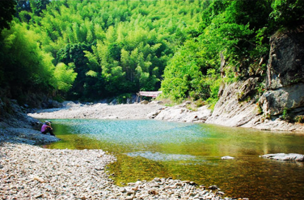
【檀头山岛】景观隶属于象山县石浦镇，随着石浦海洋旅游城镇地位的确立，以及上海、杭州、宁波、舟山、台州、温州等高速公路及快速干道的形成，檀头山丰富的旅游资源正在发挥她的潜在优势。檀头山岛中部是狭颈状地貌，东、西两个相背的海湾各孕育一个沙滩，两滩最近处仅相距数十米，俗称“姐妹滩”。东沙滩面向东海，平缓舒展，滩长约1700米，沙幼色黄，不粘不陷，“潮来一排雪，潮去一片金”，令人叫绝。这里金沙碧海，白浪冲滩，鸥飞长空，白云蓝天两相映，素有"东海第一滩"之美誉。
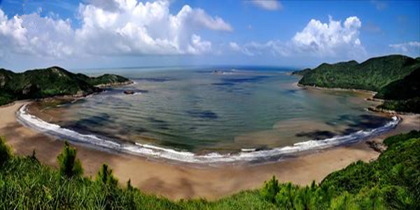
宁海新星酒店坐落于宁海县城繁华地段，交通十分方便。酒店外观按现代时尚风格设计建筑，，拥有豪华套房、豪华单间、商务单间、商务双人间、标准双人间、标准单人间等各类客房，客房装修全部采用红木家具，科勒洁具。并设有特色餐厅;多功能会议室，可供商务会议需要。除此之外，美容美发和棋牌室等场所，令人流连忘返。整个酒店装饰高雅，中央空调、电脑系统、电视、音响、等均采用先进设备。宁海新星宾馆在酒店行业中将独树一帜，以优越的地理环境、较齐全的服务项目、先进的设备设施为各界宾客提供热情周到、体贴入微的服务。
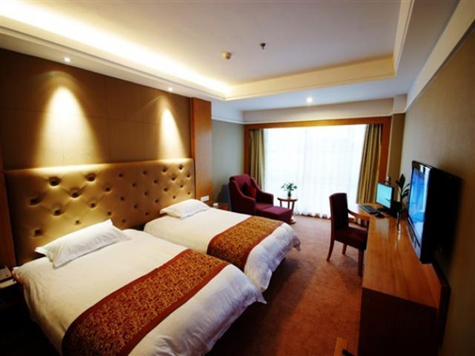
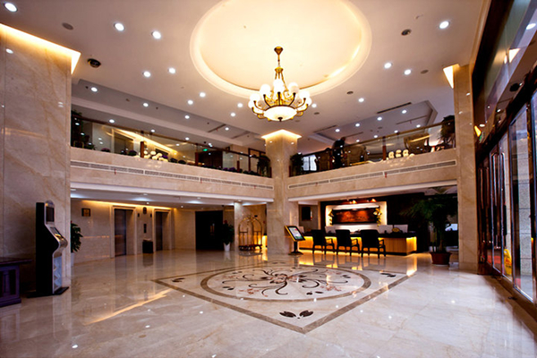
DAY2 宁海-张辽村-清水溪-逐步村-檀头山岛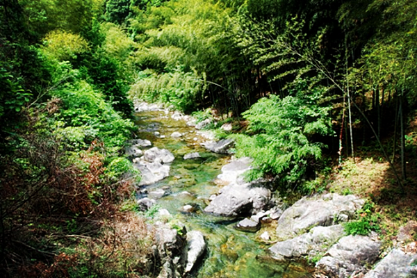
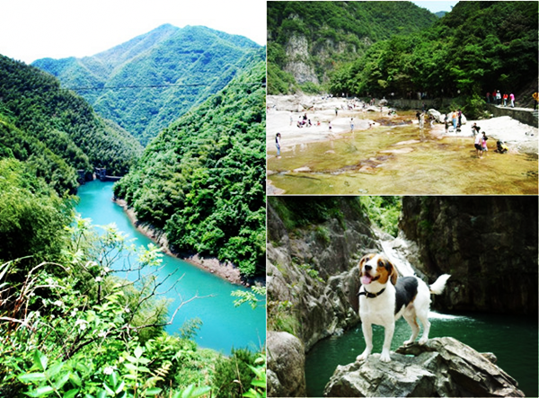
9:30左右到达山脚，清澈的溪水，大家开始欢呼，整顿向前，手脚并用，水陆兼走，溯溪清水溪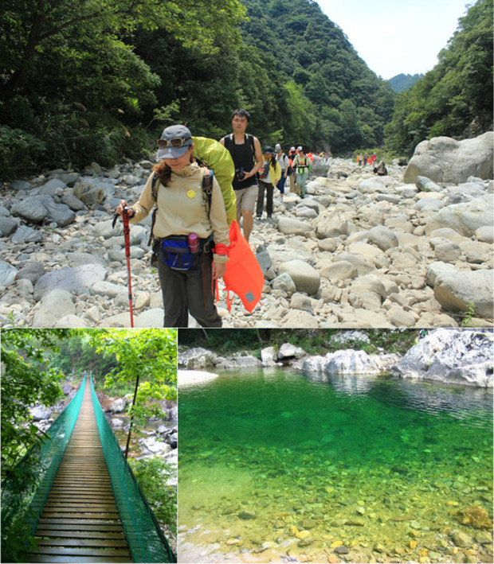
14:00到达逐步村上车前往石浦码头。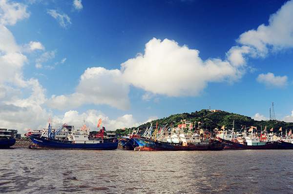
18:00 终于到达营地啦，这里有地道的海鲜大餐等着你哦，这个时候形象神马的都是浮云。胡吃海吃才是真理！吃饱喝足后要干活啦。走着，帐篷搭起来！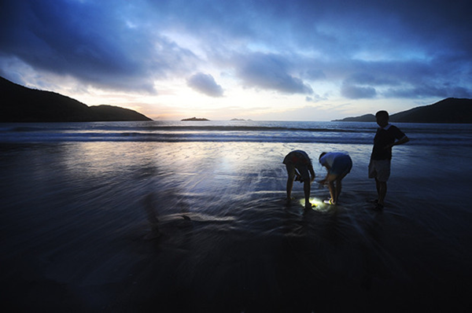
DAY3 檀头山岛-上海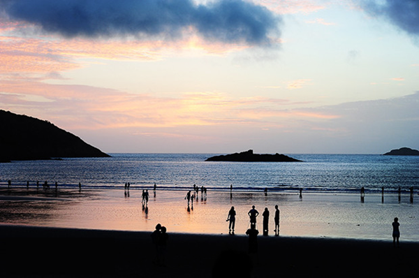
组成檀头山岛的，实际上是两个互不相连的孤岛，而两岛之间，大约也就一公里海面，天造地设，由一条海中沙埕将两者相连了起来。这条沙埕，向东面的，是海沙滩，老百姓叫其为外沙头。向西面的是卵石滩，老百姓叫其为里沙头。里外沙头，一埕相连，真是形同姐妹。外沙头浩大、开阔、气派，长约近两公里。骑自行车用中等速度需用15分钟时间，面积如此之大，当称华东第一。外沙头的风貌原始古朴，沙滩中至今仍盛产沙蛤，外沙头空旷的沙滩，稀少的人群，对海滩生物绝少人工干扰，置身于此，贪图到的，是人与自然那份难得的和谐。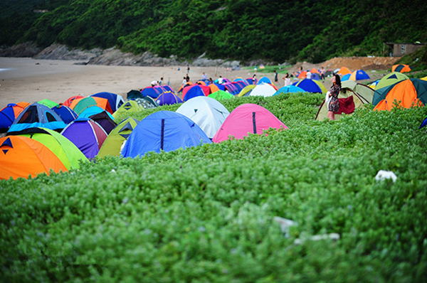
吃过中饭坐船回石浦 ，然后开车回上海！